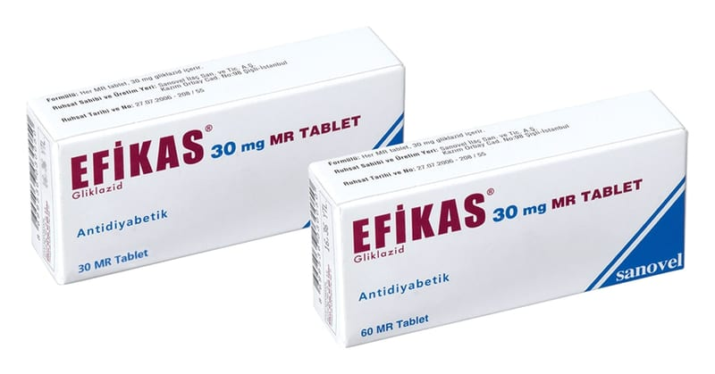

Efikas MR 30 mg MR Tablet, 60 Tablet

Ne için kullanılır
KT · Bölüm 1EFİKAS MR, beyaz veya hemen hemen beyaz renkli, çentikli, oblong tabletler halindedir. EFİKAS MR 30, 60, 90 ve 120 tablet içeren blister ambalajlarda piyasaya sunulmaktadır.
EFİKAS MR, kandaki şeker düzeyini azaltır (sülfonilüre grubuna ait oral antidiyabetik).
EFİKAS MR, yetişkinlerde, diyet, fiziksel egzersiz ve kilo vermenin tek başına kan şekeri kontrolünü sağlamada yetersiz kaldığı durumlarda, insülinden bağımsız (tip 2) diyabet (şeker) hastalığının tedavisinde kullanılmaktadır.